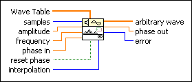
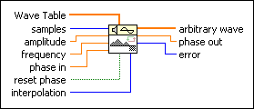
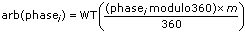

Arbitrary Wave VI
Owning Palette: Signal Generation VIs
Requires: Full Development System
Generates an array containing an arbitrary wave.

 Add to the block diagram Add to the block diagram |
 Find on the palette Find on the palette |
Owning Palette: Signal Generation VIs
Requires: Full Development System
Generates an array containing an arbitrary wave.

| Add to the block diagram |
Find on the palette |
 |
Wave Table is one cycle of the waveform used in creating the output arbitrary wave. |
 |
samples is the number of samples in arbitrary wave. The default is 128. samples must be greater than or equal to 0. If samples is less than zero, the VI sets arbitrary wave to an empty array and returns an error. |
 |
amplitude is the amplitude of arbitrary wave. The default is 1. |
|
frequency is the frequency of arbitrary wave in normalized units of cycles/sample. The default is 1 cycle/128 samples or 7.8125E–3 cycles/sample. |
|
phase in is the initial phase, in degrees, of arbitrary wave when reset phase is 0. |
 |
reset phase determines the initial phase of arbitrary wave. The default is TRUE. If reset phase is TRUE, LabVIEW sets the initial phase to phase in. If reset phase is FALSE, LabVIEW uses the value of phase out from when the VI last executed as the initial phase of arbitrary wave. |
|
interpolation determines the type of interpolation the VI uses to generate arbitrary wave from the Wave Table array. The default is 0 (no interpolation). If interpolation is 0, the VI does not use interpolation. If interpolation is 1, the VI uses linear interpolation. |
 |
arbitrary wave is the output arbitrary wave. |
 |
phase out is the phase of the waveform in degrees. |
 |
error returns any error or warning from the VI. You can wire error to the Error Cluster From Error Code VI to convert the error code or warning into an error cluster. |
If the sequence Y represents arbitrary wave, the Arbitrary Wave VI generates the sequence according to the following equation:
yi = a*arb(phasei)
for i = 0, 1, 2, …, n – 1
where a is amplitude and n is samples.
This VI calculates arb(phasei) using the following equation:

where
m is the size of the Wave Table array,
WT(x) = Wave Table[int(x)] if interpolation = 0 (no interpolation),
WT(x) is the linearly interpolated value of Wave Table[int(x)] and Wave Table[(int(x) + 1) modulo m] if interpolation = 1 (linear interpolation),
phasei = initial_phase + frequency*360.0*i,
frequency is the frequency in normalized units of cycles/sample,
initial_phase is phase in if reset phase is TRUE,
initial_phase is the phase out from the previous execution of this instance of the VI if reset phase is FALSE.
The Arbitrary Wave VI is reentrant, so you can use it to simulate a continuous acquisition from an arbitrary wave function generator. If reset phase is FALSE, subsequent calls to a specific instance of this VI produce arbitrary wave containing the next samples of the arbitrary wave. LabVIEW sets phase out to phasen, and this reentrant VI uses this value as the new phase in if reset phase is FALSE the next time this VI executes.
Refer to the Arbitrary Wave Display VI in the labview\examples\Signal Processing\Signal Generation directory for an example of using the Arbitrary Wave VI.
 Open example Find related examples
Open example Find related examples